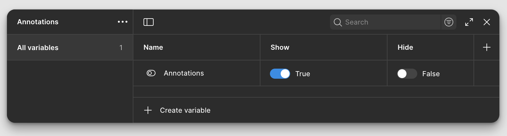
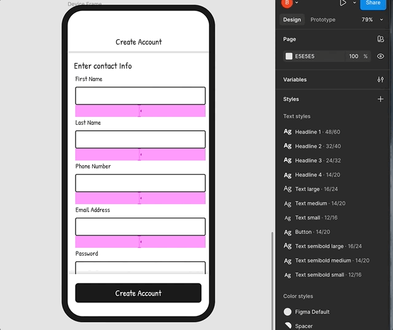

Background
Our design team recently began exploring a new way to annotate designs directly in Figma. While searching for examples of this technique online, we came up short—which made us wonder if other teams were thinking about this the same way we were.
Figma already supports switching between properties using modes which is great for themes like light/dark mode or responsive layouts. We started thinking, could we use modes to annotate?
The Problem with Static Spacing Annotations
In our current setup, we use custom spacing components to indicate padding and margin between UI elements. These are overlaid manually on top of mockups and toggled on or off as needed.
The problem with this approach is as soon as you change the layout, those overlays become inaccurate. That means manually fixing annotations every time the design changes which creates scenarios for potential annotation discrepencies and time consuming to update.
The Experiment
We tried something different. What if we embedded the spacing annotations directly into the mockups and used modes to toggle spacing visibility?

This way, we could:
- Edit spacing and layout without breaking the annotations
- Include other toggled visibility helpers (like spec labels, dev notes)
- Keep a clean default view for design reviews

It’s still just an experiment right now, but so far it’s proving to be a lightweight and flexible alternative to traditional annotation overlays.
Note: This article was co-written with the help of AI to improve clarity and structure.